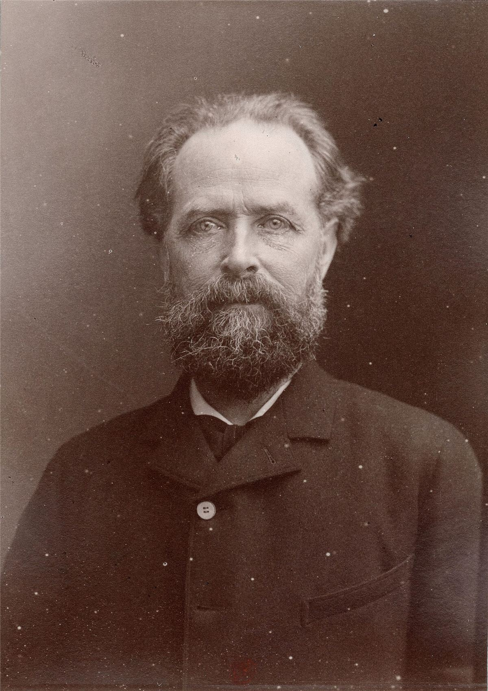

Reclus a écrit une géographie du monde entier en dix-neuf volumes, et il a trouvé le temps de faire la Commune, d'être banni, de défendre les animaux et d'écrire des brochures pour les paysans. Pour Mamie, c'est le grand-père de l'écologie libertaire.

Sa vie
- Il naît en 1830 à Sainte-Foy-la-Grande, en Gironde, fils d'un pasteur protestant, dans une fratrie de quatorze enfants dont plusieurs deviennent eux aussi des savants et des révolutionnaires.
- Exilé après le coup d'État de 1851, il voyage en Angleterre, aux États-Unis et en Colombie. En Louisiane, il voit l'esclavage de près et le dénonce.
- 1871 : il s'engage dans la garde nationale de la Commune. Fait prisonnier dès avril, il est condamné à la déportation. Une pétition de savants du monde entier obtient que la peine soit changée en bannissement.
- En Suisse, il écrit sa Nouvelle Géographie universelle (1876-1894) et se lie avec Kropotkine. En 1894, il fonde l'Université nouvelle de Bruxelles.
- Il meurt en Belgique en 1905, en terminant L'Homme et la Terre.
Ce qu'il défend
- L'humanité est la nature prenant conscience d'elle-même : on ne peut pas libérer les êtres humains en saccageant la Terre.
- L'évolution et la révolution vont ensemble : les grandes ruptures préparent de lentes transformations, et inversement.
- Voter, c'est abdiquer : déléguer son pouvoir, c'est le perdre.
- Le végétarisme et le respect des animaux, rares chez les révolutionnaires de son temps.
Ce qu'on en discute
Reclus était anticolonialiste dans ses principes et dénonçait les massacres, mais sa géographie reprend parfois l'idée d'une « mission » des peuples européens et d'une colonisation « pacifique » qui répandrait le progrès. Les historiennes et historiens de la géographie en débattent encore.
Le lire sur le site
- L'Anarchie, L'Évolution, la révolution et l'idéal anarchique, À mon frère le paysan, Voter c'est abdiquer, Pourquoi sommes-nous anarchistes ? et Du sentiment de la nature, en entier.
- Les fiches À propos du végétarisme et De l'esclavage aux États-Unis.
Sources et pour aller plus loin
Lire
- Élisée Reclus, géographe de la liberté, Philippe Pelletier, éd. Atelier de création libertaire, 2013.Par un géographe, spécialiste de Reclus.
Sur le web
- Élisée Reclus sur WikipédiaRepères biographiques.
- Le site Reclus du RA-ForumTextes, lettres et études.
Portrait écrit par la bande à Mamie. Photo d'époque issue de Wikimedia Commons. Libre de reproduction.
À lire aussi · Penser l'anarchie
- Pierre-Joseph Proudhon, le premier à se dire anarchisteTypographe de Besançon, il lance « la propriété, c'est le vol », invente le mutuellisme et le fédéralisme. Un père fondateur, avec de vraies taches.
- Errico Malatesta, l'électricien de la révolutionSoixante ans de lutte, des insurrections paysannes aux occupations d'usines, des exils aux prisons : l'anarchiste le plus concret de sa génération.
- Gustav Landauer, l'État est une relationÉcrivain, critique et militant, il pense que l'État tient à nos façons de vivre ensemble, crée une fédération de communautés et meurt assassiné après la république des conseils de Bavière.